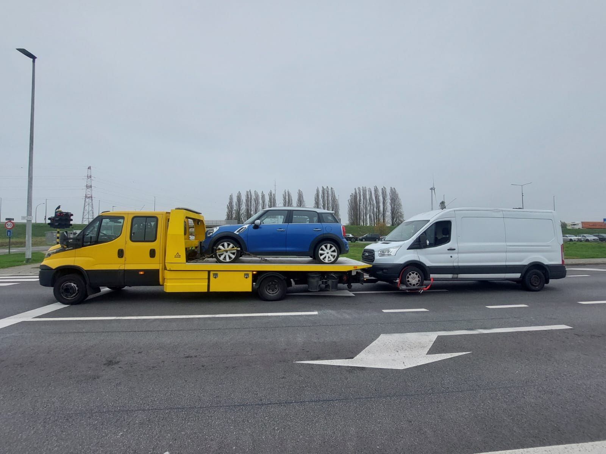

Sleepdienst Dordrecht
binnen 30 minuten*, prijs vooraf.
Auto stuk in Dordrecht? Bel nu. Een sleepwagen komt naar u toe, en u hoort de prijs voordat iemand vertrekt.
Geen lidmaatschap, geen verrassing achteraf. Wij laden de auto op het plateau en brengen hem naar uw garage, naar huis of naar het adres dat u noemt.

* Bij dringende oproepen vaak mogelijk, afhankelijk van uw locatie en het verkeer. U hoort bij het bellen hoe snel we er kunnen zijn.
Sleepdienst Dordrecht: wegen en knelpunten
De A16 loopt langs Dordrecht, van Rotterdam naar Breda. Ten noorden van de stad gaat hij door de Drechttunnel onder de Oude Maas, ten zuiden over de Moerdijkbruggen over het Hollandsch Diep. De N3 verbindt de A16 met Papendrecht en de A15. Aan de noordkant ligt de A15 richting Gorinchem.
De A16 is een van de drukste wegen van Nederland, met veel vrachtverkeer. Pech op een rijstrook? Bel eerst Rijkswaterstaat (0800-8002) of 112.
Auto slepen in Dordrecht: goed om te weten
Het eiland. Dordrecht ligt op een eiland, met water aan alle kanten. In de oude binnenstad zijn de straten en kades smal. Zeg het ons als de auto daar staat.
Wijken en omgeving. Ook in Sterrenburg, Stadspolders, Dubbeldam, Krispijn, Zwijndrecht, Papendrecht, Sliedrecht en ’s-Gravendeel halen we auto’s op.
Bedrijventerreinen. Rond Dordrecht liggen grote bedrijventerreinen, zoals de Dordtse Kil. Pech met een bestelbus op het werk? Geef de bedrijfsnaam door; wij slepen ook bestelbussen.
A16/N3 en de bruggen. Dordrecht zit tussen A16, N3 en de Oude Maas. Bij pech op de A16 noemt u afrit of paaltje. Op de Zwijndrechtse brug of Papendrechtse brug zet u alarmlichten aan; in de Drechttunnel volgt u de tunnelregie.
Pechhulp in Dordrecht
Van Krispijn of Sterrenburg naar een garage op het eiland is vaak een korte rit; een lege accu lossen we ter plaatse. Bij de Wantij of in de binnenstad zijn kades smal. Ook Zwijndrecht, Papendrecht en Hendrik-Ido-Ambacht.
Takeldienst en autotransport in Dordrecht
Van de Dordtse Kil of Krispijn naar een garage op het eiland is meestal een korte rit. Moet de auto over de brug naar Zwijndrecht of Papendrecht, noemt u die bestemming vooraf. De Drechttunnel mijdt u als opstapplek: laden gebeurt buiten de tunnelmond.
Wat wij doen in Dordrecht: Auto slepen · Pechhulp · Berging · Slepen na een ongeval · Bestelbus slepen · Takeldienst · Camper en caravan transport · Autoambulance · Elektrische auto slepen · Sleepdienst in de buurt · Autotransport · Vrachtwagen slepen
Antwoorden voordat u belt
Mijn auto valt stil in de Drechttunnel. Wat moet ik doen?
Zet de motor uit, laat de sleutel zitten, zet de alarmlichten aan en ga naar een vluchtdeur. Bel 112. Is de auto uit de tunnel gehaald, dan slepen wij hem verder.
Mijn auto staat op een kade in de oude binnenstad. Kunnen jullie daar komen?
De kades zijn smal. Geef precies door waar de auto staat, dan kijken we waar de sleepwagen het beste kan stoppen.
Komen jullie ook in Zwijndrecht, Papendrecht en Sliedrecht?
Ja, in heel de Drechtsteden.
Wat kost een sleepdienst in Dordrecht?
Geen verrassing achteraf: de sleepprijs hoort u voordat de wagen vertrekt.
Is er ook ’s nachts een takeldienst in Dordrecht?
Ja, dag en nacht, ook in het weekend. Geen abonnement nodig.
Zoekt u een goedkope sleepdienst in Dordrecht?
Vergelijk gerust. U betaalt bij ons alleen de afgesproken rit, zonder verrassingen achteraf.
Staat uw auto stil?
Bel of stuur een WhatsApp met uw locatie. Dag en nacht, ook in het weekend.